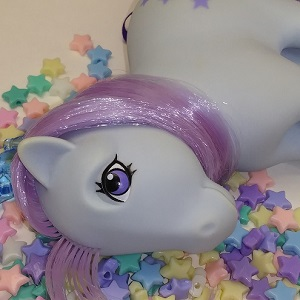
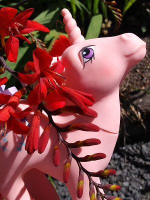

My goal is to bring you the sweetest toys of the 80s and beyond, in as clean and lovely condition as they can be!
All toys in my store are lovingly prepared in a sanitized environment and stored safely in plastic to keep them clean and nice until they make their way home to you.
Each toy I restore is like an old friend and I give each one individual care, including:
sweetponysky is a place to reconnect with your childhood friends and to make a few new ones along the way!
While my passion is rescuing vintage My Little Ponies from dark storage spaces and restoring them to beauty, I also offer a selection of the the best toys and collectibles from the 80s and beyond.
Proceeds help go towards the costs of ponies, restoration supplies, and shipping materials.
Whether your joy is My Little Pony, Care Bears, Pound Puppies, Rainbow Brite, Cabbage Patch Kids, or something else- there is sure to be someone waiting for you at sweetponysky!
Top In 1982 Hasbro began production of My Little Pony, a brushable vinyl pastel horse that was small enough to take everywhere in your pocket and bring on adventures with you (this was after having started out with a large, hard plastic horse that had a trigger under the chin to blink the eyes and was known as "My Pretty Pony").
Over the many successful years of its existence, hundreds of unique and amazing varieties and types of ponies have been made, some only in one country or another. Today, both vintage and modernized versions of My Little Pony continue to garner popularity with children and adults alike.
There are so many interesting types and beautiful varieties of My Little Ponies out there that it is truly exciting and wonderful to collect them. I still come across pony types I have never seen before. They are a world of beauty and they bring beauty into the world!
TopCLICK HERE to see more photos of my work
to check out my eBay store for sweet ponies and more!
sweetponysky@gmail.com
Top